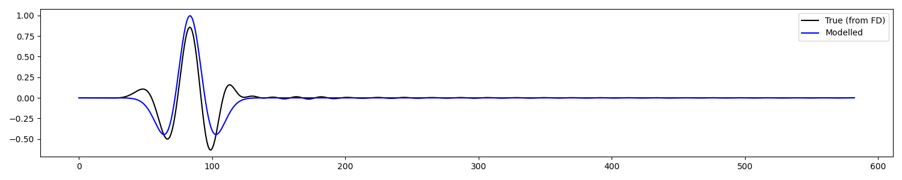

Note
Go to the end to download the full example code.
2.4 Cross-Correlation-Based Localisation - Single component#
This tutorial illustrates how to perform source localisation by inversion using a Kirchhoff-based modelling operator together with a correlation-based objective function.
Similar to the other tutorials on this topic, we will consider heree a simple scenario where the subsurface is homogenous, as such we can compute an analytical expression for the traveltime. Moreover, we discard the amplitude component from the high-frequency approximation of the Green’s function adopted here. As such, we expect our modelling operator to be accurate in terms of kinematic, however inaccurate in terms of its dynamic component (amplitudes).
Using a standard least-squares data misfit term in an inversion approach to source localisation (as done in the previous tutorial) would lead to inaccurate results, unless the modelling operator is improved to take into account the amplitude of the wavefield. An alternative route, which we have decided to take here, does instead require us to design an objective function that is mostly sensitive to traveltime, and less so to amplitudes. Following prior work in the literature of least-squares imaging for active seismic data, the normalized correlation function (aka Pearson correlation coefficient) between the modelled and observed data is used here, as defined by:
Whilst this objective function is differentiable with respect to \(m(\mathbf{x})\) and one could write a gradient ‘by-hand’, this tutorial is also aimed at showcasing how easy is to combine FraCSPy with modern software packages from the deep learning community such as PyTorch, which provide Automatic Differentiation (AD) functionalities. The optimization process is therefore carried out using a AD-based gradient of the main objective function, \(\partial J / \partial m(\mathbf{x})\), augumented with a L1 regularization term that promotes sparse solutions (i.e., compact source distributions).
Load model and seismic data#
For this example, we will use a toy homogenous model with a gridded surface receiver array. The data are modelled using the SOFI3D Finite Difference modelling software. The model is the same that we have used in the FD modelling to generate the data. As such, it contains additional boundaries, which we need to remove prior to performing localisation.
# Directory containing input data
input_dir = '../data/pyfrac_SOFIModelling'
# Model parameters
abs_bounds = 30
dx = dy = dz = 5
nx = 112
ny = 128
nz = 120
# Modelling parameters
dt = 1e-3 # SOFI3D Time sampling rate
t_shift = 167 # Time shift required to align FD data to zero time for Kirchhoff operators
# Load model
mod_w_bounds = np.fromfile(os.path.join(input_dir,'inputs',
'models',
'Homogeneous_xyz.vp'),
dtype='float32').reshape([nx, ny, nz])
# Load receiver geometry
recs_xzy = np.loadtxt(os.path.join(input_dir,'inputs',
'griddedarray_xzy_20m.dat')).T
nr = recs_xzy.shape[1]
# Load seismic data
expname = 'explosive_Homogeneous_griddedarray'
vz = read_seis(os.path.join(input_dir, 'outputs',
'su', f'{expname}_vy.txt'),
nr=nr)
vz = vz[:, t_shift:] # Cut time axis to account for selected ignition time
vz /= np.max(abs(vz)) # Normalise to get reasonable amplitudes
# Remove absorbing boundaries from both the model and receiver coordinates
mod = mod_w_bounds[abs_bounds:-abs_bounds, abs_bounds:-abs_bounds, :-abs_bounds] # z has free surface
nx, ny, nz = mod.shape
x, y, z = np.arange(nx) * dx, np.arange(ny) * dy, np.arange(nz) * dz
recs = np.array([recs_xzy[0]-(abs_bounds*dx), recs_xzy[2]-(abs_bounds*dx), recs_xzy[1]])
Let’s now double-check that the data has been loaded correctly.
fig, ax = fracspy.visualisation.traceviz.traceimage(vz, climQ=99.99, figsize=(10, 4))
ax.set_title('SOFI FD data - Vertical Component')
plt.tight_layout()
Create modelling operator#
First, we will define a Ricker wavelet with peak frequency of 20Hz. This is the same wavelet that we used in modelling; in real applications, this will need to be estimated from the data.
Second, we define our modelling operator; as part of the initialization process, an eikonal solver is used here to compute the traveltimes from each subsurface point to each receiver.
Dot test passed, v^H(Opu)=-47915.52437836175 - u^H(Op^Hv)=-47915.52437836188
ASIDE: Checking operator optimality#
Here we will just forward model the data to check that it looks similar to the one computed via Finite-Difference. This is not strictly required if we are simply interested to apply the adjoint of our modelling operator (i.e., source localisation by imaging); however, it becomes important if we want to invert the modelling operator (i.e., source localisation by inversion). For such a simple subsurface model and synthetically generated data, we expect to have a good match even though our modelling operator is clearly ignoring some physics (e.g., geometrical spreading).
When working with field data, this preliminary step becomes even more important as one may want to look at the waveform to ensure that its kinematic and frequency content is consistent with that of the observed data. As far as the kinematic part is concerned, this will be dependant on the velocity model as well as the choice of the ignition time. [More commentary on ignition time can be found in the tutorial on rolling detection.]
# Choose a microseismic source location as function of grid points
sx = nx // 2
sy = ny // 2
sz = 2 * nz // 3
print(f'True source location [index]: {sx}-{sy}-{sz}')
microseismic = np.zeros((nx, ny, nz))
microseismic[sx, sy, sz] = 1.
# Perform forward modelling
frwddata_1d = Op @ microseismic.flatten().squeeze()
frwddata = frwddata_1d.reshape(nr,nt)
True source location [index]: 26-34-60
Let’s compare the data across the full array
fig, axs = plt.subplots(1, 2, sharey=True, figsize=[15,5])
axs[0].imshow(vz.T, aspect='auto', cmap='seismic', vmin=-1,vmax=1)
axs[0].set_title('True (from FD)')
axs[1].imshow(frwddata.T, aspect='auto', cmap='seismic', vmin=-1, vmax=1)
axs[1].imshow(vz.T, aspect='auto', cmap='seismic', vmin=-1,vmax=1)
axs[1].set_title('Modelled')
plt.tight_layout()
And at trace level
Source localisation by cross-correlation-based imaging#
L = fracspy.location.Location(x, y, z)
xc_inv, xci_hc = L.apply(vz, kind="xcorri", Op=Op, nforhc=10)
print('True Hypo-Center:', [sx,sy,sz])
print('Migration Hypo-Centers:', xci_hc)
fig, axs = locimage3d(xc_inv,
x0=int(np.round(xci_hc[0])),
y0=int(np.round(xci_hc[1])),
z0=int(np.round(xci_hc[2])),
p=100)
plt.tight_layout()
0%| | 0/100 [00:00<?, ?it/s]
0%| | 0/100 [00:00<?, ?it/s, Data Loss=-0.718, L1reg Loss=6.95, Total Loss=4.84]
1%| | 1/100 [00:00<00:42, 2.32it/s, Data Loss=-0.718, L1reg Loss=6.95, Total Loss=4.84]
1%| | 1/100 [00:00<00:42, 2.32it/s, Data Loss=-0.725, L1reg Loss=6.7, Total Loss=4.64]
2%|▏ | 2/100 [00:00<00:42, 2.32it/s, Data Loss=-0.725, L1reg Loss=6.7, Total Loss=4.64]
2%|▏ | 2/100 [00:01<00:42, 2.32it/s, Data Loss=-0.729, L1reg Loss=5.41, Total Loss=3.6]
3%|▎ | 3/100 [00:01<00:41, 2.34it/s, Data Loss=-0.729, L1reg Loss=5.41, Total Loss=3.6]
3%|▎ | 3/100 [00:01<00:41, 2.34it/s, Data Loss=-0.733, L1reg Loss=5.62, Total Loss=3.76]
4%|▍ | 4/100 [00:01<00:40, 2.35it/s, Data Loss=-0.733, L1reg Loss=5.62, Total Loss=3.76]
4%|▍ | 4/100 [00:02<00:40, 2.35it/s, Data Loss=-0.736, L1reg Loss=4.56, Total Loss=2.91]
5%|▌ | 5/100 [00:02<00:40, 2.35it/s, Data Loss=-0.736, L1reg Loss=4.56, Total Loss=2.91]
5%|▌ | 5/100 [00:02<00:40, 2.35it/s, Data Loss=-0.737, L1reg Loss=4.92, Total Loss=3.2]
6%|▌ | 6/100 [00:02<00:40, 2.35it/s, Data Loss=-0.737, L1reg Loss=4.92, Total Loss=3.2]
6%|▌ | 6/100 [00:02<00:40, 2.35it/s, Data Loss=-0.74, L1reg Loss=3.99, Total Loss=2.45]
7%|▋ | 7/100 [00:02<00:39, 2.33it/s, Data Loss=-0.74, L1reg Loss=3.99, Total Loss=2.45]
7%|▋ | 7/100 [00:03<00:39, 2.33it/s, Data Loss=-0.741, L1reg Loss=4.43, Total Loss=2.8]
8%|▊ | 8/100 [00:03<00:39, 2.33it/s, Data Loss=-0.741, L1reg Loss=4.43, Total Loss=2.8]
8%|▊ | 8/100 [00:03<00:39, 2.33it/s, Data Loss=-0.743, L1reg Loss=3.56, Total Loss=2.11]
9%|▉ | 9/100 [00:03<00:39, 2.32it/s, Data Loss=-0.743, L1reg Loss=3.56, Total Loss=2.11]
9%|▉ | 9/100 [00:04<00:39, 2.32it/s, Data Loss=-0.743, L1reg Loss=4.06, Total Loss=2.5]
10%|█ | 10/100 [00:04<00:38, 2.32it/s, Data Loss=-0.743, L1reg Loss=4.06, Total Loss=2.5]
10%|█ | 10/100 [00:04<00:38, 2.32it/s, Data Loss=-0.745, L1reg Loss=3.24, Total Loss=1.85]
11%|█ | 11/100 [00:04<00:38, 2.33it/s, Data Loss=-0.745, L1reg Loss=3.24, Total Loss=1.85]
11%|█ | 11/100 [00:05<00:38, 2.33it/s, Data Loss=-0.745, L1reg Loss=3.77, Total Loss=2.27]
12%|█▏ | 12/100 [00:05<00:37, 2.33it/s, Data Loss=-0.745, L1reg Loss=3.77, Total Loss=2.27]
12%|█▏ | 12/100 [00:05<00:37, 2.33it/s, Data Loss=-0.748, L1reg Loss=2.99, Total Loss=1.65]
13%|█▎ | 13/100 [00:05<00:37, 2.34it/s, Data Loss=-0.748, L1reg Loss=2.99, Total Loss=1.65]
13%|█▎ | 13/100 [00:06<00:37, 2.34it/s, Data Loss=-0.747, L1reg Loss=3.55, Total Loss=2.09]
14%|█▍ | 14/100 [00:06<00:36, 2.33it/s, Data Loss=-0.747, L1reg Loss=3.55, Total Loss=2.09]
14%|█▍ | 14/100 [00:06<00:36, 2.33it/s, Data Loss=-0.75, L1reg Loss=2.79, Total Loss=1.49]
15%|█▌ | 15/100 [00:06<00:36, 2.33it/s, Data Loss=-0.75, L1reg Loss=2.79, Total Loss=1.49]
15%|█▌ | 15/100 [00:06<00:36, 2.33it/s, Data Loss=-0.749, L1reg Loss=3.36, Total Loss=1.94]
16%|█▌ | 16/100 [00:06<00:36, 2.33it/s, Data Loss=-0.749, L1reg Loss=3.36, Total Loss=1.94]
16%|█▌ | 16/100 [00:07<00:36, 2.33it/s, Data Loss=-0.752, L1reg Loss=2.64, Total Loss=1.36]
17%|█▋ | 17/100 [00:07<00:35, 2.34it/s, Data Loss=-0.752, L1reg Loss=2.64, Total Loss=1.36]
17%|█▋ | 17/100 [00:07<00:35, 2.34it/s, Data Loss=-0.751, L1reg Loss=3.21, Total Loss=1.82]
18%|█▊ | 18/100 [00:07<00:35, 2.32it/s, Data Loss=-0.751, L1reg Loss=3.21, Total Loss=1.82]
18%|█▊ | 18/100 [00:08<00:35, 2.32it/s, Data Loss=-0.754, L1reg Loss=2.51, Total Loss=1.25]
19%|█▉ | 19/100 [00:08<00:34, 2.33it/s, Data Loss=-0.754, L1reg Loss=2.51, Total Loss=1.25]
19%|█▉ | 19/100 [00:08<00:34, 2.33it/s, Data Loss=-0.752, L1reg Loss=3.08, Total Loss=1.71]
20%|██ | 20/100 [00:08<00:34, 2.34it/s, Data Loss=-0.752, L1reg Loss=3.08, Total Loss=1.71]
20%|██ | 20/100 [00:08<00:34, 2.34it/s, Data Loss=-0.755, L1reg Loss=2.39, Total Loss=1.16]
21%|██ | 21/100 [00:08<00:33, 2.34it/s, Data Loss=-0.755, L1reg Loss=2.39, Total Loss=1.16]
21%|██ | 21/100 [00:09<00:33, 2.34it/s, Data Loss=-0.756, L1reg Loss=2.18, Total Loss=0.99]
22%|██▏ | 22/100 [00:09<00:33, 2.33it/s, Data Loss=-0.756, L1reg Loss=2.18, Total Loss=0.99]
22%|██▏ | 22/100 [00:09<00:33, 2.33it/s, Data Loss=-0.756, L1reg Loss=1.9, Total Loss=0.763]
23%|██▎ | 23/100 [00:09<00:33, 2.33it/s, Data Loss=-0.756, L1reg Loss=1.9, Total Loss=0.763]
23%|██▎ | 23/100 [00:10<00:33, 2.33it/s, Data Loss=-0.756, L1reg Loss=2.13, Total Loss=0.944]
24%|██▍ | 24/100 [00:10<00:32, 2.32it/s, Data Loss=-0.756, L1reg Loss=2.13, Total Loss=0.944]
24%|██▍ | 24/100 [00:10<00:32, 2.32it/s, Data Loss=-0.757, L1reg Loss=1.85, Total Loss=0.721]
25%|██▌ | 25/100 [00:10<00:32, 2.32it/s, Data Loss=-0.757, L1reg Loss=1.85, Total Loss=0.721]
25%|██▌ | 25/100 [00:11<00:32, 2.32it/s, Data Loss=-0.758, L1reg Loss=2.07, Total Loss=0.902]
26%|██▌ | 26/100 [00:11<00:31, 2.33it/s, Data Loss=-0.758, L1reg Loss=2.07, Total Loss=0.902]
26%|██▌ | 26/100 [00:11<00:31, 2.33it/s, Data Loss=-0.759, L1reg Loss=1.8, Total Loss=0.681]
27%|██▋ | 27/100 [00:11<00:31, 2.33it/s, Data Loss=-0.759, L1reg Loss=1.8, Total Loss=0.681]
27%|██▋ | 27/100 [00:12<00:31, 2.33it/s, Data Loss=-0.759, L1reg Loss=2.03, Total Loss=0.862]
28%|██▊ | 28/100 [00:12<00:31, 2.32it/s, Data Loss=-0.759, L1reg Loss=2.03, Total Loss=0.862]
28%|██▊ | 28/100 [00:12<00:31, 2.32it/s, Data Loss=-0.76, L1reg Loss=1.75, Total Loss=0.643]
29%|██▉ | 29/100 [00:12<00:30, 2.31it/s, Data Loss=-0.76, L1reg Loss=1.75, Total Loss=0.643]
29%|██▉ | 29/100 [00:12<00:30, 2.31it/s, Data Loss=-0.76, L1reg Loss=1.98, Total Loss=0.823]
30%|███ | 30/100 [00:12<00:30, 2.33it/s, Data Loss=-0.76, L1reg Loss=1.98, Total Loss=0.823]
30%|███ | 30/100 [00:13<00:30, 2.33it/s, Data Loss=-0.762, L1reg Loss=1.71, Total Loss=0.607]
31%|███ | 31/100 [00:13<00:29, 2.33it/s, Data Loss=-0.762, L1reg Loss=1.71, Total Loss=0.607]
31%|███ | 31/100 [00:13<00:29, 2.33it/s, Data Loss=-0.762, L1reg Loss=1.93, Total Loss=0.786]
32%|███▏ | 32/100 [00:13<00:29, 2.34it/s, Data Loss=-0.762, L1reg Loss=1.93, Total Loss=0.786]
32%|███▏ | 32/100 [00:14<00:29, 2.34it/s, Data Loss=-0.763, L1reg Loss=1.67, Total Loss=0.573]
33%|███▎ | 33/100 [00:14<00:28, 2.35it/s, Data Loss=-0.763, L1reg Loss=1.67, Total Loss=0.573]
33%|███▎ | 33/100 [00:14<00:28, 2.35it/s, Data Loss=-0.763, L1reg Loss=1.89, Total Loss=0.751]
34%|███▍ | 34/100 [00:14<00:28, 2.34it/s, Data Loss=-0.763, L1reg Loss=1.89, Total Loss=0.751]
34%|███▍ | 34/100 [00:15<00:28, 2.34it/s, Data Loss=-0.764, L1reg Loss=1.63, Total Loss=0.54]
35%|███▌ | 35/100 [00:15<00:27, 2.34it/s, Data Loss=-0.764, L1reg Loss=1.63, Total Loss=0.54]
35%|███▌ | 35/100 [00:15<00:27, 2.34it/s, Data Loss=-0.765, L1reg Loss=1.85, Total Loss=0.718]
36%|███▌ | 36/100 [00:15<00:27, 2.34it/s, Data Loss=-0.765, L1reg Loss=1.85, Total Loss=0.718]
36%|███▌ | 36/100 [00:15<00:27, 2.34it/s, Data Loss=-0.766, L1reg Loss=1.6, Total Loss=0.51]
37%|███▋ | 37/100 [00:15<00:26, 2.35it/s, Data Loss=-0.766, L1reg Loss=1.6, Total Loss=0.51]
37%|███▋ | 37/100 [00:16<00:26, 2.35it/s, Data Loss=-0.766, L1reg Loss=1.82, Total Loss=0.687]
38%|███▊ | 38/100 [00:16<00:26, 2.35it/s, Data Loss=-0.766, L1reg Loss=1.82, Total Loss=0.687]
38%|███▊ | 38/100 [00:16<00:26, 2.35it/s, Data Loss=-0.767, L1reg Loss=1.56, Total Loss=0.483]
39%|███▉ | 39/100 [00:16<00:26, 2.34it/s, Data Loss=-0.767, L1reg Loss=1.56, Total Loss=0.483]
39%|███▉ | 39/100 [00:17<00:26, 2.34it/s, Data Loss=-0.767, L1reg Loss=1.78, Total Loss=0.657]
40%|████ | 40/100 [00:17<00:25, 2.33it/s, Data Loss=-0.767, L1reg Loss=1.78, Total Loss=0.657]
40%|████ | 40/100 [00:17<00:25, 2.33it/s, Data Loss=-0.768, L1reg Loss=1.53, Total Loss=0.457]
41%|████ | 41/100 [00:17<00:25, 2.33it/s, Data Loss=-0.768, L1reg Loss=1.53, Total Loss=0.457]
41%|████ | 41/100 [00:17<00:25, 2.33it/s, Data Loss=-0.768, L1reg Loss=1.34, Total Loss=0.306]
42%|████▏ | 42/100 [00:18<00:24, 2.34it/s, Data Loss=-0.768, L1reg Loss=1.34, Total Loss=0.306]
42%|████▏ | 42/100 [00:18<00:24, 2.34it/s, Data Loss=-0.768, L1reg Loss=1.3, Total Loss=0.272]
43%|████▎ | 43/100 [00:18<00:24, 2.35it/s, Data Loss=-0.768, L1reg Loss=1.3, Total Loss=0.272]
43%|████▎ | 43/100 [00:18<00:24, 2.35it/s, Data Loss=-0.768, L1reg Loss=1.32, Total Loss=0.292]
44%|████▍ | 44/100 [00:18<00:23, 2.35it/s, Data Loss=-0.768, L1reg Loss=1.32, Total Loss=0.292]
44%|████▍ | 44/100 [00:19<00:23, 2.35it/s, Data Loss=-0.768, L1reg Loss=1.28, Total Loss=0.259]
45%|████▌ | 45/100 [00:19<00:23, 2.37it/s, Data Loss=-0.768, L1reg Loss=1.28, Total Loss=0.259]
45%|████▌ | 45/100 [00:19<00:23, 2.37it/s, Data Loss=-0.768, L1reg Loss=1.31, Total Loss=0.279]
46%|████▌ | 46/100 [00:19<00:22, 2.37it/s, Data Loss=-0.768, L1reg Loss=1.31, Total Loss=0.279]
46%|████▌ | 46/100 [00:20<00:22, 2.37it/s, Data Loss=-0.768, L1reg Loss=1.27, Total Loss=0.246]
47%|████▋ | 47/100 [00:20<00:22, 2.37it/s, Data Loss=-0.768, L1reg Loss=1.27, Total Loss=0.246]
47%|████▋ | 47/100 [00:20<00:22, 2.37it/s, Data Loss=-0.769, L1reg Loss=1.29, Total Loss=0.267]
48%|████▊ | 48/100 [00:20<00:21, 2.37it/s, Data Loss=-0.769, L1reg Loss=1.29, Total Loss=0.267]
48%|████▊ | 48/100 [00:20<00:21, 2.37it/s, Data Loss=-0.769, L1reg Loss=1.25, Total Loss=0.234]
49%|████▉ | 49/100 [00:20<00:21, 2.36it/s, Data Loss=-0.769, L1reg Loss=1.25, Total Loss=0.234]
49%|████▉ | 49/100 [00:21<00:21, 2.36it/s, Data Loss=-0.769, L1reg Loss=1.28, Total Loss=0.255]
50%|█████ | 50/100 [00:21<00:21, 2.35it/s, Data Loss=-0.769, L1reg Loss=1.28, Total Loss=0.255]
50%|█████ | 50/100 [00:21<00:21, 2.35it/s, Data Loss=-0.769, L1reg Loss=1.24, Total Loss=0.223]
51%|█████ | 51/100 [00:21<00:20, 2.34it/s, Data Loss=-0.769, L1reg Loss=1.24, Total Loss=0.223]
51%|█████ | 51/100 [00:22<00:20, 2.34it/s, Data Loss=-0.769, L1reg Loss=1.27, Total Loss=0.244]
52%|█████▏ | 52/100 [00:22<00:20, 2.34it/s, Data Loss=-0.769, L1reg Loss=1.27, Total Loss=0.244]
52%|█████▏ | 52/100 [00:22<00:20, 2.34it/s, Data Loss=-0.77, L1reg Loss=1.23, Total Loss=0.211]
53%|█████▎ | 53/100 [00:22<00:20, 2.35it/s, Data Loss=-0.77, L1reg Loss=1.23, Total Loss=0.211]
53%|█████▎ | 53/100 [00:23<00:20, 2.35it/s, Data Loss=-0.77, L1reg Loss=1.25, Total Loss=0.232]
54%|█████▍ | 54/100 [00:23<00:19, 2.34it/s, Data Loss=-0.77, L1reg Loss=1.25, Total Loss=0.232]
54%|█████▍ | 54/100 [00:23<00:19, 2.34it/s, Data Loss=-0.77, L1reg Loss=1.21, Total Loss=0.2]
55%|█████▌ | 55/100 [00:23<00:19, 2.34it/s, Data Loss=-0.77, L1reg Loss=1.21, Total Loss=0.2]
55%|█████▌ | 55/100 [00:23<00:19, 2.34it/s, Data Loss=-0.77, L1reg Loss=1.24, Total Loss=0.221]
56%|█████▌ | 56/100 [00:23<00:18, 2.34it/s, Data Loss=-0.77, L1reg Loss=1.24, Total Loss=0.221]
56%|█████▌ | 56/100 [00:24<00:18, 2.34it/s, Data Loss=-0.77, L1reg Loss=1.2, Total Loss=0.19]
57%|█████▋ | 57/100 [00:24<00:18, 2.34it/s, Data Loss=-0.77, L1reg Loss=1.2, Total Loss=0.19]
57%|█████▋ | 57/100 [00:24<00:18, 2.34it/s, Data Loss=-0.77, L1reg Loss=1.23, Total Loss=0.211]
58%|█████▊ | 58/100 [00:24<00:17, 2.35it/s, Data Loss=-0.77, L1reg Loss=1.23, Total Loss=0.211]
58%|█████▊ | 58/100 [00:25<00:17, 2.35it/s, Data Loss=-0.771, L1reg Loss=1.19, Total Loss=0.179]
59%|█████▉ | 59/100 [00:25<00:17, 2.36it/s, Data Loss=-0.771, L1reg Loss=1.19, Total Loss=0.179]
59%|█████▉ | 59/100 [00:25<00:17, 2.36it/s, Data Loss=-0.771, L1reg Loss=1.21, Total Loss=0.2]
60%|██████ | 60/100 [00:25<00:17, 2.35it/s, Data Loss=-0.771, L1reg Loss=1.21, Total Loss=0.2]
60%|██████ | 60/100 [00:26<00:17, 2.35it/s, Data Loss=-0.771, L1reg Loss=1.17, Total Loss=0.169]
61%|██████ | 61/100 [00:26<00:16, 2.33it/s, Data Loss=-0.771, L1reg Loss=1.17, Total Loss=0.169]
61%|██████ | 61/100 [00:26<00:16, 2.33it/s, Data Loss=-0.771, L1reg Loss=1.03, Total Loss=0.0495]
62%|██████▏ | 62/100 [00:26<00:16, 2.32it/s, Data Loss=-0.771, L1reg Loss=1.03, Total Loss=0.0495]
62%|██████▏ | 62/100 [00:26<00:16, 2.32it/s, Data Loss=-0.771, L1reg Loss=1.03, Total Loss=0.0557]
63%|██████▎ | 63/100 [00:26<00:15, 2.34it/s, Data Loss=-0.771, L1reg Loss=1.03, Total Loss=0.0557]
63%|██████▎ | 63/100 [00:27<00:15, 2.34it/s, Data Loss=-0.771, L1reg Loss=1.02, Total Loss=0.044]
64%|██████▍ | 64/100 [00:27<00:15, 2.34it/s, Data Loss=-0.771, L1reg Loss=1.02, Total Loss=0.044]
64%|██████▍ | 64/100 [00:27<00:15, 2.34it/s, Data Loss=-0.771, L1reg Loss=1.03, Total Loss=0.0506]
65%|██████▌ | 65/100 [00:27<00:14, 2.35it/s, Data Loss=-0.771, L1reg Loss=1.03, Total Loss=0.0506]
65%|██████▌ | 65/100 [00:28<00:14, 2.35it/s, Data Loss=-0.771, L1reg Loss=1.01, Total Loss=0.0391]
66%|██████▌ | 66/100 [00:28<00:14, 2.36it/s, Data Loss=-0.771, L1reg Loss=1.01, Total Loss=0.0391]
66%|██████▌ | 66/100 [00:28<00:14, 2.36it/s, Data Loss=-0.771, L1reg Loss=1.02, Total Loss=0.0456]
67%|██████▋ | 67/100 [00:28<00:14, 2.34it/s, Data Loss=-0.771, L1reg Loss=1.02, Total Loss=0.0456]
67%|██████▋ | 67/100 [00:29<00:14, 2.34it/s, Data Loss=-0.771, L1reg Loss=1.01, Total Loss=0.0342]
68%|██████▊ | 68/100 [00:29<00:13, 2.33it/s, Data Loss=-0.771, L1reg Loss=1.01, Total Loss=0.0342]
68%|██████▊ | 68/100 [00:29<00:13, 2.33it/s, Data Loss=-0.771, L1reg Loss=1.01, Total Loss=0.0407]
69%|██████▉ | 69/100 [00:29<00:13, 2.34it/s, Data Loss=-0.771, L1reg Loss=1.01, Total Loss=0.0407]
69%|██████▉ | 69/100 [00:29<00:13, 2.34it/s, Data Loss=-0.771, L1reg Loss=1, Total Loss=0.0294]
70%|███████ | 70/100 [00:29<00:12, 2.34it/s, Data Loss=-0.771, L1reg Loss=1, Total Loss=0.0294]
70%|███████ | 70/100 [00:30<00:12, 2.34it/s, Data Loss=-0.771, L1reg Loss=1.01, Total Loss=0.0359]
71%|███████ | 71/100 [00:30<00:12, 2.34it/s, Data Loss=-0.771, L1reg Loss=1.01, Total Loss=0.0359]
71%|███████ | 71/100 [00:30<00:12, 2.34it/s, Data Loss=-0.772, L1reg Loss=0.995, Total Loss=0.0247]
72%|███████▏ | 72/100 [00:30<00:11, 2.34it/s, Data Loss=-0.772, L1reg Loss=0.995, Total Loss=0.0247]
72%|███████▏ | 72/100 [00:31<00:11, 2.34it/s, Data Loss=-0.772, L1reg Loss=1, Total Loss=0.0311]
73%|███████▎ | 73/100 [00:31<00:11, 2.35it/s, Data Loss=-0.772, L1reg Loss=1, Total Loss=0.0311]
73%|███████▎ | 73/100 [00:31<00:11, 2.35it/s, Data Loss=-0.772, L1reg Loss=0.99, Total Loss=0.02]
74%|███████▍ | 74/100 [00:31<00:11, 2.34it/s, Data Loss=-0.772, L1reg Loss=0.99, Total Loss=0.02]
74%|███████▍ | 74/100 [00:32<00:11, 2.34it/s, Data Loss=-0.772, L1reg Loss=0.998, Total Loss=0.0264]
75%|███████▌ | 75/100 [00:32<00:10, 2.34it/s, Data Loss=-0.772, L1reg Loss=0.998, Total Loss=0.0264]
75%|███████▌ | 75/100 [00:32<00:10, 2.34it/s, Data Loss=-0.772, L1reg Loss=0.984, Total Loss=0.0153]
76%|███████▌ | 76/100 [00:32<00:10, 2.33it/s, Data Loss=-0.772, L1reg Loss=0.984, Total Loss=0.0153]
76%|███████▌ | 76/100 [00:32<00:10, 2.33it/s, Data Loss=-0.772, L1reg Loss=0.992, Total Loss=0.0218]
77%|███████▋ | 77/100 [00:32<00:09, 2.33it/s, Data Loss=-0.772, L1reg Loss=0.992, Total Loss=0.0218]
77%|███████▋ | 77/100 [00:33<00:09, 2.33it/s, Data Loss=-0.772, L1reg Loss=0.979, Total Loss=0.0107]
78%|███████▊ | 78/100 [00:33<00:09, 2.33it/s, Data Loss=-0.772, L1reg Loss=0.979, Total Loss=0.0107]
78%|███████▊ | 78/100 [00:33<00:09, 2.33it/s, Data Loss=-0.772, L1reg Loss=0.986, Total Loss=0.017]
79%|███████▉ | 79/100 [00:33<00:08, 2.34it/s, Data Loss=-0.772, L1reg Loss=0.986, Total Loss=0.017]
79%|███████▉ | 79/100 [00:34<00:08, 2.34it/s, Data Loss=-0.772, L1reg Loss=0.973, Total Loss=0.00623]
80%|████████ | 80/100 [00:34<00:08, 2.34it/s, Data Loss=-0.772, L1reg Loss=0.973, Total Loss=0.00623]
80%|████████ | 80/100 [00:34<00:08, 2.34it/s, Data Loss=-0.772, L1reg Loss=0.981, Total Loss=0.0124]
81%|████████ | 81/100 [00:34<00:08, 2.34it/s, Data Loss=-0.772, L1reg Loss=0.981, Total Loss=0.0124]
81%|████████ | 81/100 [00:35<00:08, 2.34it/s, Data Loss=-0.772, L1reg Loss=0.896, Total Loss=-0.0558]
82%|████████▏ | 82/100 [00:35<00:07, 2.33it/s, Data Loss=-0.772, L1reg Loss=0.896, Total Loss=-0.0558]
82%|████████▏ | 82/100 [00:35<00:07, 2.33it/s, Data Loss=-0.772, L1reg Loss=0.894, Total Loss=-0.0568]
83%|████████▎ | 83/100 [00:35<00:07, 2.33it/s, Data Loss=-0.772, L1reg Loss=0.894, Total Loss=-0.0568]
83%|████████▎ | 83/100 [00:35<00:07, 2.33it/s, Data Loss=-0.772, L1reg Loss=0.892, Total Loss=-0.0584]
84%|████████▍ | 84/100 [00:35<00:06, 2.34it/s, Data Loss=-0.772, L1reg Loss=0.892, Total Loss=-0.0584]
84%|████████▍ | 84/100 [00:36<00:06, 2.34it/s, Data Loss=-0.772, L1reg Loss=0.891, Total Loss=-0.0591]
85%|████████▌ | 85/100 [00:36<00:06, 2.34it/s, Data Loss=-0.772, L1reg Loss=0.891, Total Loss=-0.0591]
85%|████████▌ | 85/100 [00:36<00:06, 2.34it/s, Data Loss=-0.772, L1reg Loss=0.889, Total Loss=-0.0606]
86%|████████▌ | 86/100 [00:36<00:05, 2.34it/s, Data Loss=-0.772, L1reg Loss=0.889, Total Loss=-0.0606]
86%|████████▌ | 86/100 [00:37<00:05, 2.34it/s, Data Loss=-0.772, L1reg Loss=0.889, Total Loss=-0.0614]
87%|████████▋ | 87/100 [00:37<00:05, 2.35it/s, Data Loss=-0.772, L1reg Loss=0.889, Total Loss=-0.0614]
87%|████████▋ | 87/100 [00:37<00:05, 2.35it/s, Data Loss=-0.772, L1reg Loss=0.887, Total Loss=-0.0629]
88%|████████▊ | 88/100 [00:37<00:05, 2.36it/s, Data Loss=-0.772, L1reg Loss=0.887, Total Loss=-0.0629]
88%|████████▊ | 88/100 [00:38<00:05, 2.36it/s, Data Loss=-0.772, L1reg Loss=0.886, Total Loss=-0.0636]
89%|████████▉ | 89/100 [00:38<00:04, 2.35it/s, Data Loss=-0.772, L1reg Loss=0.886, Total Loss=-0.0636]
89%|████████▉ | 89/100 [00:38<00:04, 2.35it/s, Data Loss=-0.772, L1reg Loss=0.884, Total Loss=-0.065]
90%|█████████ | 90/100 [00:38<00:04, 2.35it/s, Data Loss=-0.772, L1reg Loss=0.884, Total Loss=-0.065]
90%|█████████ | 90/100 [00:38<00:04, 2.35it/s, Data Loss=-0.772, L1reg Loss=0.883, Total Loss=-0.0659]
91%|█████████ | 91/100 [00:38<00:03, 2.34it/s, Data Loss=-0.772, L1reg Loss=0.883, Total Loss=-0.0659]
91%|█████████ | 91/100 [00:39<00:03, 2.34it/s, Data Loss=-0.772, L1reg Loss=0.882, Total Loss=-0.0673]
92%|█████████▏| 92/100 [00:39<00:03, 2.33it/s, Data Loss=-0.772, L1reg Loss=0.882, Total Loss=-0.0673]
92%|█████████▏| 92/100 [00:39<00:03, 2.33it/s, Data Loss=-0.773, L1reg Loss=0.881, Total Loss=-0.0681]
93%|█████████▎| 93/100 [00:39<00:02, 2.34it/s, Data Loss=-0.773, L1reg Loss=0.881, Total Loss=-0.0681]
93%|█████████▎| 93/100 [00:40<00:02, 2.34it/s, Data Loss=-0.773, L1reg Loss=0.879, Total Loss=-0.0695]
94%|█████████▍| 94/100 [00:40<00:02, 2.33it/s, Data Loss=-0.773, L1reg Loss=0.879, Total Loss=-0.0695]
94%|█████████▍| 94/100 [00:40<00:02, 2.33it/s, Data Loss=-0.773, L1reg Loss=0.878, Total Loss=-0.0703]
95%|█████████▌| 95/100 [00:40<00:02, 2.32it/s, Data Loss=-0.773, L1reg Loss=0.878, Total Loss=-0.0703]
95%|█████████▌| 95/100 [00:41<00:02, 2.32it/s, Data Loss=-0.773, L1reg Loss=0.876, Total Loss=-0.0717]
96%|█████████▌| 96/100 [00:41<00:01, 2.32it/s, Data Loss=-0.773, L1reg Loss=0.876, Total Loss=-0.0717]
96%|█████████▌| 96/100 [00:41<00:01, 2.32it/s, Data Loss=-0.773, L1reg Loss=0.875, Total Loss=-0.0725]
97%|█████████▋| 97/100 [00:41<00:01, 2.33it/s, Data Loss=-0.773, L1reg Loss=0.875, Total Loss=-0.0725]
97%|█████████▋| 97/100 [00:41<00:01, 2.33it/s, Data Loss=-0.773, L1reg Loss=0.874, Total Loss=-0.0739]
98%|█████████▊| 98/100 [00:41<00:00, 2.32it/s, Data Loss=-0.773, L1reg Loss=0.874, Total Loss=-0.0739]
98%|█████████▊| 98/100 [00:42<00:00, 2.32it/s, Data Loss=-0.773, L1reg Loss=0.873, Total Loss=-0.0747]
99%|█████████▉| 99/100 [00:42<00:00, 2.32it/s, Data Loss=-0.773, L1reg Loss=0.873, Total Loss=-0.0747]
99%|█████████▉| 99/100 [00:42<00:00, 2.32it/s, Data Loss=-0.773, L1reg Loss=0.871, Total Loss=-0.0761]
100%|██████████| 100/100 [00:42<00:00, 2.33it/s, Data Loss=-0.773, L1reg Loss=0.871, Total Loss=-0.0761]
100%|██████████| 100/100 [00:42<00:00, 2.34it/s, Data Loss=-0.773, L1reg Loss=0.871, Total Loss=-0.0761]
True Hypo-Center: [26, 34, 60]
Migration Hypo-Centers: [26.2 34. 61. ]
Total running time of the script: (1 minutes 10.552 seconds)